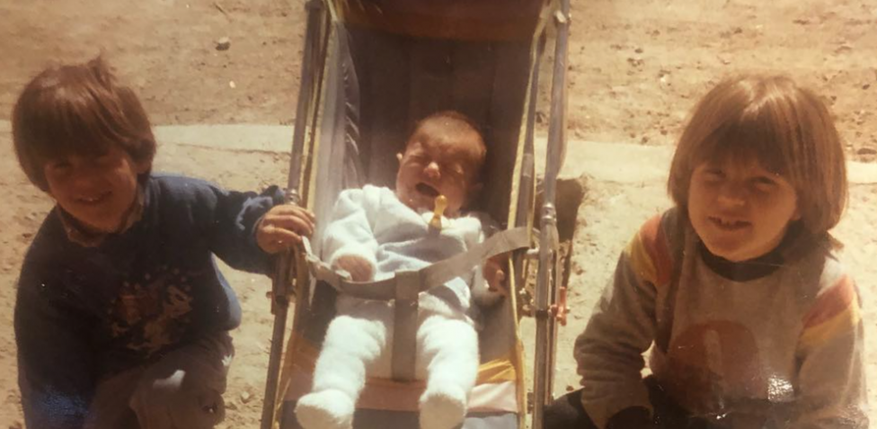
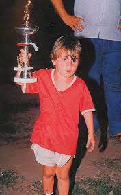
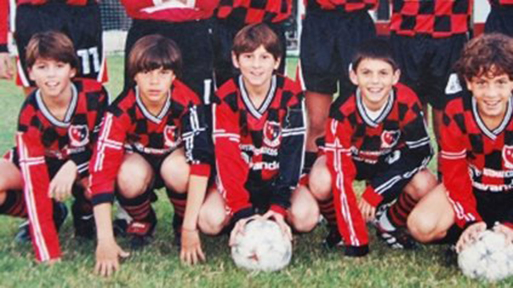

En Argentina naci...
Sus comienzos
En un rincón mágico del Hospital Italiano Garibaldi en la ciudad de Rosario, provincia de Santa Fe, un destello de luz nació el 24 de junio de 1987. Ese destello se llamó Lionel Andrés Messi Cuccittini. Era el tercer hijo de Jorge Horacio Messi y Celia María Cuccittini, y desde el momento en que llegó a este mundo, su destino estaba marcado por las estrellas.
Una familia con raíces italianas, descendientes de Recanati, donde su bisabuelo, Angelo Messi, dejó su tierra natal en 1883 para forjar un legado en tierras argentinas. Pero fue su abuela materna, la dulce Celia, quien sopló el viento del fútbol en las velas de su vida. Y Messi, a lo largo de su inigualable carrera, no olvidaría nunca señalar al cielo con gratitud cada vez que su magia convertía un gol. En medio de este cuadro familiar, dos primos, Maximiliano y Emanuel Biancucchi, también compartieron el amor por el juego que corría por sus venas. La vida de Messi comenzó en la escuela primaria N° 66 "Gral. Las Heras", pero su verdadera educación futbolística se desarrolló en los campos de juego. Con apenas cuatro años, el joven Messi ya se aventuraba en el mundo del fútbol en el club Abanderado Grandoli, en su querido barrio Grandoli, al sur de Rosario. El hombre que encendió la chispa de su pasión fue Salvador Aparicio, su primer entrenador. Un inicio humilde que plantó las semillas de una grandeza que ningún obstáculo podría detener.
En 1994, Messi dio un paso adelante al unirse a las divisiones inferiores de Newell's Old Boys. Pero la vida tenía una lección más para él en su camino hacia la cima. A los ocho años, un diagnóstico impactante de deficiencia de la hormona de crecimiento puso a prueba su espíritu indomable.
Sin embargo, Lionel no se rindió. Durante un año y medio, un tratamiento que costaba 900 dólares mensuales se convirtió en un rayo de esperanza, cubierto por su obra social y la empresa en la que su padre trabajaba, Acindar. En medio de esta lucha, en 1995, Messi desafió el destino y jugó un torneo no oficial con Central Córdoba, demostrando que no había obstáculo que pudiera frenar su amor por el juego. Y entonces llegó el momento en que Italia se asomó a su puerta. El equipo italiano Como tenía la oportunidad de ficharlo en 1999, pero las complicaciones de una mudanza de la familia en pleno crecimiento llevaron a un camino diferente. Al año siguiente, el destino lo llevó a probar su suerte en Buenos Aires, donde River Plate lo esperaba con los brazos abiertos. Eduardo Abrahamian, encargado de las divisiones infantiles del club, vio en Messi un diamante en bruto y solicitó su incorporación, pero ese capítulo de su historia nunca se escribió en los libros de River Plate. Y así, en un giro del destino, Lionel Messi forjaría su leyenda en otro lugar, en un escenario que estaba destinado a ser su hogar: el Camp Nou, el estadio que se convertiría en el teatro de sus épicos actos futbolísticos. Una historia de desafíos superados, un camino lleno de obstáculos que solo un verdadero héroe puede superar. La historia de Messi es un recordatorio inspirador de que el talento y la determinación pueden llevarnos a las alturas más gloriosas, sin importar cuán empinado sea el camino.
Yo estaba en Newell's y fui a probarme a la escuela de River, en Rosario. Uno de los chicos que iba me dijo de ir y dije que sí. Después me trajeron a Buenos Aires. Eran categoría 85, todos más grandes. Yo jugué quince o veinte minutos. Me dijeron que vuelva en diez días con mi categoría. Volví e hice tres o cuatro goles y me dijeron que me tenía que quedar, que tenía que llevar el pase. Se iban a hacer cargo del tratamiento. Newell's nunca me bancó en ese sentido, nunca me lo pagó (...) En River me dijeron que llevara el pase, y cuando fui a Newell's me sacaron cagando. Peleamos y peleamos pero el pase nunca me lo dieron. Nunca me dieron el pase. Después salió todo lo del Barcelona